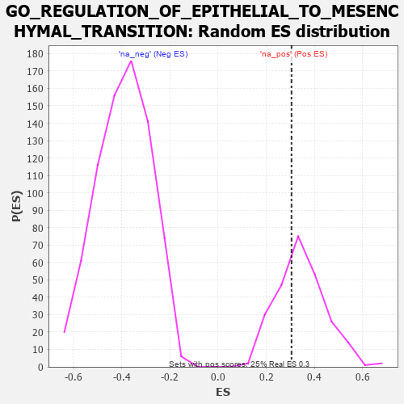

| | | Dataset | 7d |
| Phenotype | NoPhenotypeAvailable |
| Upregulated in class | na_pos |
| GeneSet | GO_REGULATION_OF_EPITHELIAL_TO_MESENCHYMAL_TRANSITION |
| Enrichment Score (ES) | 0.3046278 |
| Normalized Enrichment Score (NES) | 0.8796429 |
| Nominal p-value | 0.636 |
| FDR q-value | 0.8625903 |
| FWER p-Value | 1.0 |
Table: GSEA Results Summary
 Fig 1: Enrichment plot: GO_REGULATION_OF_EPITHELIAL_TO_MESENCHYMAL_TRANSITION
Fig 1: Enrichment plot: GO_REGULATION_OF_EPITHELIAL_TO_MESENCHYMAL_TRANSITION
Profile of the Running ES Score & Positions of GeneSet Members on the Rank Ordered List
| PROBE | GENE SYMBOL | GENE_TITLE | RANK IN GENE LIST | RANK METRIC SCORE | RUNNING ES | CORE ENRICHMENT | | 1 | TGFB3 | | | 49 | 2.654 | 0.2472 | Yes |
| 2 | AXIN2 | | | 383 | 0.713 | 0.2734 | Yes |
| 3 | ALX1 | | | 590 | 0.598 | 0.3046 | Yes |
| 4 | VASN | | | 1459 | 0.398 | 0.2334 | No |
| 5 | STRAP | | | 1793 | 0.339 | 0.2239 | No |
| 6 | SMAD4 | | | 1860 | 0.326 | 0.2467 | No |
| 7 | BMP7 | | | 2107 | 0.290 | 0.2434 | No |
| 8 | ACVR1 | | | 2932 | 0.161 | 0.1551 | No |
| 9 | LEF1 | | | 3037 | 0.144 | 0.1559 | No |
| 10 | GCNT2 | | | 3162 | 0.128 | 0.1525 | No |
| 11 | SMAD3 | | | 3303 | 0.105 | 0.1449 | No |
| 12 | SMAD7 | | | 3369 | 0.093 | 0.1456 | No |
| 13 | SFRP2 | | | 4065 | -0.018 | 0.0599 | No |
| 14 | MTOR | | | 4114 | -0.025 | 0.0562 | No |
| 15 | GATA3 | | | 4614 | -0.120 | 0.0050 | No |
| 16 | PTEN | | | 5262 | -0.261 | -0.0515 | No |
| 17 | JAG1 | | | 6060 | -0.494 | -0.1046 | No |
| 18 | SMAD2 | | | 6216 | -0.541 | -0.0724 | No |
| 19 | WWTR1 | | | 6631 | -0.729 | -0.0549 | No |
| 20 | OVOL2 | | | 7197 | -1.068 | -0.0240 | No |
| 21 | LOXL2 | | | 7403 | -1.269 | 0.0714 | No |
Table: GSEA details [plain text format]

Fig 2: GO_REGULATION_OF_EPITHELIAL_TO_MESENCHYMAL_TRANSITION: Random ES distribution
Gene set null distribution of ES for GO_REGULATION_OF_EPITHELIAL_TO_MESENCHYMAL_TRANSITION